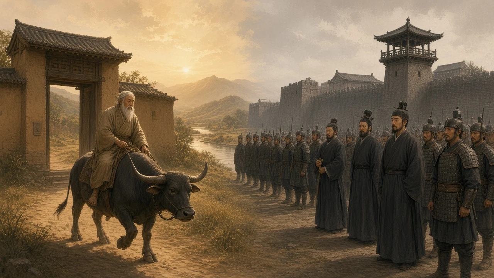
HIST 270 · History of China · Chapter 2 · Lecture 3
The Way and the Law
Do less, or trust no one
4th–3rd centuries BCE · The Laozi: Do Less · Zhuangzi: Stay Free · The Legalists: Trust No One Background essay ↗
A hermit on an ox leaves through a mountain gate; a walled city of drilled soldiers and officials fills the plain behind. AI-generated interpretation, not a historical record.
Welcome to Lecture 3 of Chapter 2. This deck follows two schools that rejected Confucius's whole project: the Daoists , who said striving to fix the world makes it worse, and the Legalists , who said only clear laws, rewards and punishments could hold a state together (pp. 30–32).
Use the arrow keys, N for these notes, and Esc for a slide map. Three segments end with self-checks; Reading Guide Questions 8 and 9 follow. The Pierian Spring at the end is required independent study.
The title image is AI-generated, not a historical record.
Check yourself: Which two Reading Guide questions does this deck prepare you for?
Cold open · A riverbank in the Warring States · ca. 300 BCE
Offered a Kingdom to Run, Zhuangzi Chose to Drag His Tail in the Mud
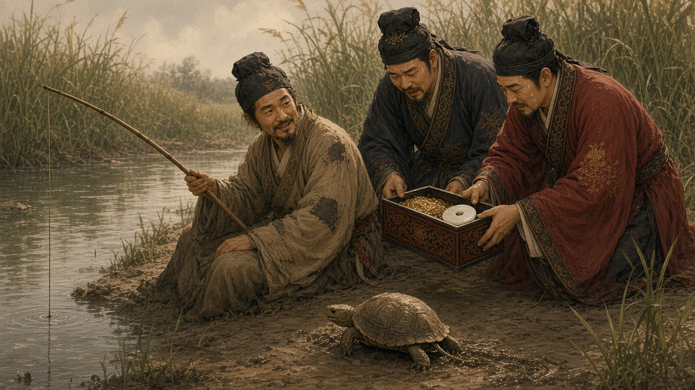
The offer. The king of Chu sent an envoy: come and run my government.
The question. Would a sacred tortoise rather be honored dead, or alive in mud?
The envoy. Alive, he agreed, dragging its tail in the mud.
The answer. “Then go away. I would rather drag my tail in the mud.”
Sources: Ebrey, Ch. 2, p. 30.
Start with a scene that sounds like a joke. A messenger arrives from the king of Chu , the great southern state, with an offer most men of the Warring States would have killed for: come and take over the government of my realm. The man he finds is Zhuangzi (jwang-dze), a thinker who lived from 369 to 286 BCE and who was, your textbook says, proud of his disinterest in politics (p. 30).
Zhuangzi answers with a question. There is a sacred tortoise that has been dead for three thousand years; its bones are honored in the king's temple. Would that tortoise rather be dead with its bones venerated, or alive with its tail dragging in the mud? Alive, the envoy agrees. Then go away, says Zhuangzi: he would rather drag his tail in the mud (p. 30). In the original story Zhuangzi is fishing when the offer comes, a detail from the book Zhuangzi itself, outside your textbook.
Think back to Lecture 1: shi traveled from court to court begging for exactly this kind of job. Zhuangzi turns it down to stay alive and free.
The image is an AI-generated interpretation, not a historical record.
Why this matters: this refusal is the Daoist answer to Confucian striving, the heart of Reading Guide Q8 (p. 30). You return to this riverbank at the end.
Check yourself: What did the tortoise stand for in Zhuangzi's answer, and what did the muddy tail stand for?
Image: Envoys of the king of Chu bow with gifts before a man fishing on a riverbank; a tortoise crawls in the mud at his feet. AI-generated interpretation, not a historical record.
Start here · How to study this deck on your own
Three Segments, Self-Checks, Two Videos, and an Open Study Buddy Button Guide You Through This Deck
Click Open Study Buddy (lower right) or press N for each slide's Study Buddy notes.
Work through three segments; each ends with a self-check.
Two short videos play inside the deck; each has a “Watch on YouTube” link.
Click a for a definition; the Pierian Spring is required study.
Arrow keys move; Esc shows a slide map. All due dates are on Canvas.
Sources: Ebrey, Ch. 2, pp. 30–32.
This slide gives you the controls. The deck is built for you to study on your own, at your own pace, so try each tool now.
Every slide has Study Buddy notes, like these. Open them with the Open Study Buddy button or the N key; press N or Esc to close them. They explain the slide, define new words, cite your textbook page, and end with a question. A good habit: read the slide first, guess its point, then open the notes and check your guess. The small letter in the lower-left corner is the slide's permanent name; quote it if you email a question.
The deck runs in three segments: the Laozi , the Zhuangzi , and the Legalists. Each ends with a self-check, quick questions that are never graded. After the Zhuangzi segment comes Reading Guide Question 8; after the Legalist segment, Question 9. Write your answers in your Reading Guide before you move on. Two short videos play inside the deck; if one will not load, use its YouTube link.
The image is an AI-generated interpretation of a student studying this deck, not a historical record.
Why this matters: testing yourself as you go is the surest way to remember what you study alone (pp. 30–32).
Check yourself: Open Study Buddy for this slide, close it with Esc, then open the teal dotted word. Did both work?
Image: A young student with headphones studies at night beside a window, a glowing screen showing a misty river landscape. AI-generated interpretation, not a historical record.
Roadmap · Two schools, three segments
Two Schools Rejected Confucius: One Said Do Less, the Other Said Trust No One
I
The Laozi: Do Less Water, yielding and the ruler who does nothing. Question 8.
II
Zhuangzi: Stay Free Tortoise, butterfly, wheelwright and death. Question 8.
III
The Legalists: Trust No One Lord Shang, Han Feizi and Qin's laws. Question 9.
The thread: Confucians trusted good men; Daoists trusted nature; Legalists trusted only the law.
This slide gives you the map of the lecture. One question runs through it: if Confucius was wrong that good men leading by example could end the wars, what should replace his answer?
Segment I: the Laozi , which said striving makes things worse and the best ruler does almost nothing (p. 30). Segment II: Zhuangzi , who mocked ambition, doubted words and books, and even doubted that death is bad (pp. 30–31). Together they prepare Reading Guide Q8. Segment III: the Legalists , Lord Shang and Han Feizi, and the state of Qin, which put their ideas into practice (pp. 31–32). That segment prepares Q9.
Check yourself: Name the three segments and the Reading Guide question each one prepares.
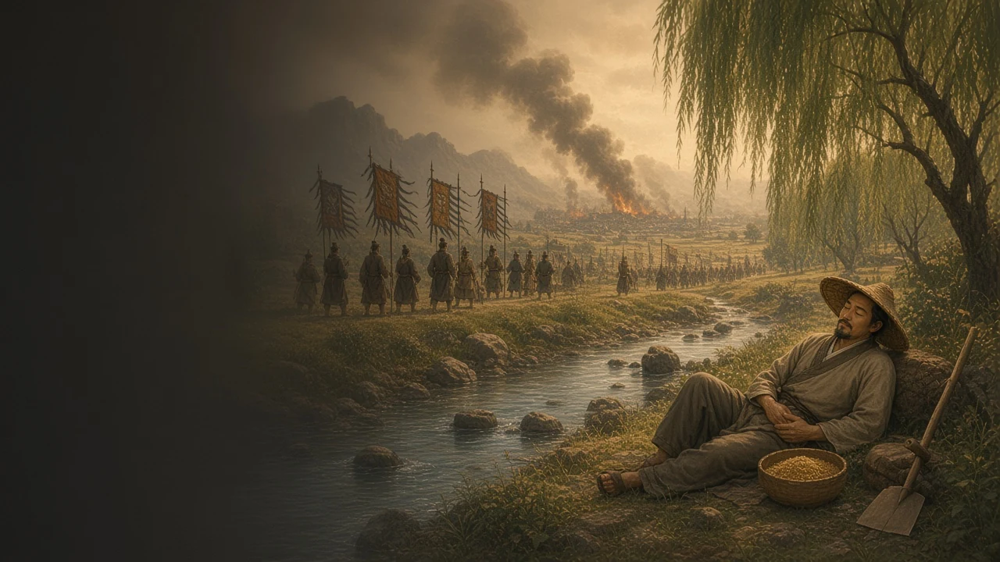
Segment 1 of 3 · Act I · 4th–3rd centuries BCE
The Laozi: Do Less
The harder rulers tried to fix the world, the worse it got. So stop trying.
A farmer naps in the shade of a willow above a quiet stream while, far below, an army's banners crawl across a burning plain. AI-generated interpretation, not a historical record.
Segment 1 begins. You meet the Daoist reply to Confucius: striving to make things better generally makes them worse (p. 30). Then you meet the book called the Laozi , its praise of water and yielding, its picture of a ruler who governs by doing nothing, and its dream of a simple village life (p. 30).
The image is an AI-generated interpretation, not a historical record: one man at rest above a world at war.
This segment builds toward Reading Guide Q8 (p. 30).
Check yourself: Guess before you start: if every ruler around you is drafting armies and passing new laws, what would doing less look like?
Q8 story · The Daoist reply · 4th–3rd centuries BCE
Daoists Said That Trying to Fix the World Made It Worse
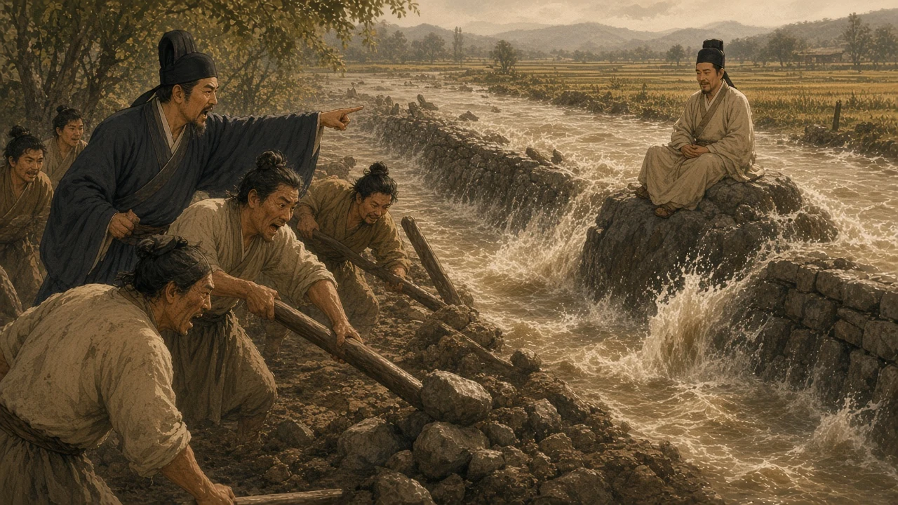
Confucians. Men of virtue should work to make government benefit the people.
Daoists. Striving to make things better generally makes them worse.
Leave us alone. Defend private life; rulers should let people be.
Look bigger. Focus on the whole natural order, the Way, not on humans.
Sources: Ebrey, Ch. 2, p. 30.
This slide gives you the Daoist answer in one sentence. Confucius and his followers believed in moral and political effort: men of virtue should devote themselves to making the government work for the benefit of the people. Those later labeled Daoists disagreed (p. 30).
The authors of the Laozi and the Zhuangzi , your textbook says, thought striving to make things better generally makes them worse. They defended private life and wanted rulers to leave the people alone. They tried to go beyond everyday concerns and let their minds wander freely. And instead of making human beings and human actions the center of attention, they looked at the larger scheme of things, the whole natural order they called the Way , or Dao (dow) (p. 30).
Remember from Lecture 2 that labels such as Daoism were applied later; these authors did not call themselves a school (p. 26).
The image is an AI-generated interpretation, not a historical record: forcing a river straight makes it flood.
Why this matters: Reading Guide Q8 asks how Daoists responded to Confucian striving; this sentence on p. 30 is the anchor the Reading Guide points you to. Note it as your opening claim, then gather evidence from the slides that follow.
Check yourself: What two things did the Daoists want rulers to do, or stop doing?
Image: An official shouts orders as laborers force a river into a straight stone channel; it bursts its banks while an old man watches calmly from a rock. AI-generated interpretation, not a historical record.
Q8 concept · Dao · Wu wei
Concept: The Dao Is the Way Nature Runs; Wu Wei Is Acting Without Forcing
Concept
Dao · Wu wei
Dao (dow): “the Way,” the whole natural order of things. Wu wei (woo way): “no action,” acting without forcing, the way water flows downhill.
The Dao. Not a god or a rulebook; the pattern the whole world follows.
Beyond words. “The Way that can be discussed is not the constant Way.”
Wu wei. Not laziness; doing only what flows naturally, without strain.
For rulers. The ruler who forces nothing keeps order best.
Sources: Ebrey, Ch. 2, p. 30.
This slide gives you the two words you need for the rest of the lecture. Dao (dow) means “the Way.” Confucius used the word for the right way to live and govern; the Daoists used it for something much bigger, the whole natural order, the way the universe itself runs (p. 30).
The Laozi opens by warning that words cannot capture it: “The Way that can be discussed is not the constant Way” (1) (p. 30). That is why Daoist writing is full of paradox and images instead of definitions.
Wu wei (woo way) literally means “no action” or “non-action.” Your textbook gives the idea in the Laozi 's own words: “Engage in no action and order will prevail” (3) (p. 30). The Chinese term wu wei is the standard name for this idea, used by scholars outside your textbook. It does not mean lying in bed. It means acting without forcing, the way water finds its way downhill or a skilled craftsman's hands move without thinking.
The next slides show what this looked like: water, a ruler who does nothing, and a village that wants nothing.
Why this matters: for Reading Guide Q8, the Dao and wu wei are the Daoist alternative to Confucian effort.
Check yourself: Why does wu wei not mean doing nothing at all? Give an example from nature.
Q8 story · The Old Master · 3rd century BCE
Master Lao May Never Have Lived, but His Short Book Lasted
Sources: Ebrey, Ch. 2, p. 30; Sima Qian, Shiji 63 outside the textbook .
This slide gives you the book behind the first half of the lecture. Both the Laozi and the Zhuangzi , your textbook says, are literary masterpieces that date to the third century BCE. Master Lao, the supposed author of the Laozi , may not be a historical figure, but the text ascribed to him has been of enduring importance (p. 30). It is a brief book of aphorisms , short, memorable sayings.
Its recurring theme is the mystical superiority of yielding over assertion and silence over words (p. 30). Notice how strange that sounds in the age you studied in Lecture 1, when states survived by drafting every man over fifteen.
The scene on the image is a legend, outside your textbook. About 100 BCE the historian Sima Qian wrote that Laozi was a record keeper at the Zhou court who, seeing the dynasty decline, rode west through a mountain pass; the gatekeeper begged him to write down his teaching first, and he left behind a book of about five thousand characters. Scholars treat this as legend. Archaeology also suggests that parts of the book circulated a little before the third century; the Pierian Spring tells that story.
The image is an AI-generated interpretation of the legend, not a historical record.
Why this matters: for Reading Guide Q8, the Laozi is your first Daoist source, even if its author is a legend (p. 30).
Check yourself: Why do historians doubt that Laozi was a real person, and why does the book matter anyway?
Image: At a mountain pass at dawn, an old man on an ox hands a bundle of bamboo strips to a bowing gatekeeper. AI-generated interpretation, not a historical record.
Q8 story · The highest good · Laozi 8
The Laozi Said the Highest Good Is Like Water
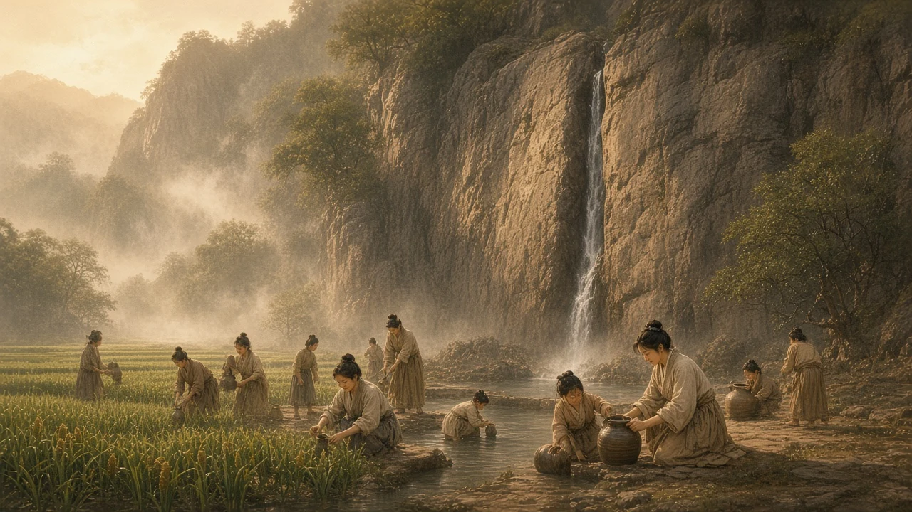
Water helps. It benefits all creatures and competes with no one.
Water goes low. It settles in places people look down on.
Soft beats hard. Yielding water wears away stone over time.
The lesson. Be like water: serve, yield, and you come near the Way.
Ch. 2 L1 · the Art of War and water ↗
Sources: Ebrey, Ch. 2, p. 30; Laozi 8.
This slide gives you the Laozi 's favorite image. “The highest good is like water,” it says. “Water benefits all creatures but does not compete. It occupies the places people disdain and thus comes near to the Way” (8) (p. 30).
Read that slowly. Water gives life to everything, yet it never fights to be on top; it flows to the lowest places, the swamps and ditches people avoid. In the Warring States, when every ruler wanted to be on top and every shi wanted promotion, the Laozi praised the thing that always goes down. Elsewhere the book adds the other half of the image, outside the textbook quotations: nothing is softer than water, yet nothing beats it at wearing away the hard and strong. That is the mystical superiority of yielding over assertion your textbook describes (p. 30).
The image is an AI-generated interpretation, not a historical record: soft water has cut through hard rock and feeds the village below.
Water returns in this lecture in two more places: the video on the next slide, and the Pierian Spring of Lecture 1, where the Art of War borrows the same image for armies.
Why this matters: for Reading Guide Q8, water is the Laozi 's model for how a person, and a ruler, should act (p. 30).
Check yourself: Name two things water does that the Laozi wants people to imitate.
Image: A thin waterfall has carved a deep notch in a cliff; villagers in a low valley fill jars from the pool it made. AI-generated interpretation, not a historical record.
Q8 story · Video · Wu wei
Watch: Wu Wei, the Art of Not Forcing Things
VIDEO
Watch for
What wu wei means, and what it does not mean
Where water appears, and why
How the idea answers a stressed, striving world
Video: “Eastern Philosophy: Wu Wei,” The School of Life. Watch on YouTube ↗
Sources: Ebrey, Ch. 2, p. 30; video: “Eastern Philosophy: Wu Wei,” The School of Life outside the textbook .
This slide gives you a short animated video about wu wei , the idea you met on the concept slide. Press play, and use the three “watch for” prompts to focus.
What the video covers, in words (about five minutes): wu wei sounds like an invitation to laziness, but it means effortless action, being so at one with a task that you do it with maximum skill, like being “in the zone.” It quotes the Laozi : the Way never acts, yet nothing is left undone. Wu wei means swimming with the current, like bamboo that bends in the wind, and being like water, soft and weak yet able to wear away what is hard. The video then says this strategic passivity shaped Chinese ideas about politics and diplomacy, and that later poets and painters, centuries after the Warring States, made spontaneity central to their art. Your textbook makes the same points (pp. 30–31).
A caution: the video comes from a modern channel that applies ancient ideas to modern life, and it is outside your textbook. Its examples from Tang dynasty poets and painters come more than a thousand years after the Laozi . The next slide gives you the Laozi 's own politics.
If the video will not play, use the YouTube link; these notes give you what you need for Q8.
Why this matters: hearing the idea explained in a new way helps you explain wu wei in your own words.
Check yourself: In one sentence, how is wu wei different from laziness?
Q8 primary source · The sage ruler · Laozi 3
“Engage in No Action and Order Will Prevail”
Do not honor the worthy, / And the people will not compete. / Do not value rare treasures, / And the people will not steal. … / A sage governs this way: / He empties people’s minds and fills their bellies. / He weakens their wills and strengthens their bones. … / Engage in no action and order will prevail.
Laozi , chapter 3, 3rd century BCE, as translated in Ebrey, p. 30 (abridged).
No contests. Stop rewarding talent, and people stop competing.
Full bellies. Feed people; empty their heads of ambition.
Read closely. Whom does this ruler stop honoring? Compare Confucius.
Ch. 2 L2 · the junzi redefined ↗
Sources: Ebrey, Ch. 2, p. 30; Laozi 3.
This slide gives you a primary source: the Laozi 's advice to rulers, in your textbook's translation. Read it aloud once. Because purposeful action is counterproductive, your textbook explains, the ruler should let people return to a natural state of ignorance and contentment (p. 30).
Take it line by line. “Do not honor the worthy, and the people will not compete.” Confucius wanted rulers to find and promote worthy men, and Lecture 1 showed rulers competing to hire talented shi; the Laozi says that very competition breeds disorder. “Do not value rare treasures, and the people will not steal”: desire makes thieves. The sage ruler “empties people's minds and fills their bellies,” weakens their wills and strengthens their bones, and keeps them without knowledge and without desires, so “the clever will not dare act.” Then the punch line: “Engage in no action and order will prevail” (3) (p. 30).
Notice how radical and how unsettling this is. It is anti-ambition, but it is also a ruler keeping people ignorant. Historians still argue over whether it is gentle or manipulative; you can make your own judgment.
Why this matters: for Reading Guide Q8, this passage is your best evidence for the Daoist alternative vision for society . When you answer, quote one line and explain how it rejects the Confucian ideal of promoting the worthy (p. 30).
Check yourself: Why would honoring worthy men make people compete, according to the Laozi ? How might Confucius have answered?
Q8 story · The simple life · Laozi 80
The Laozi Dreamed of Villages That Knew Less and Wanted Nothing
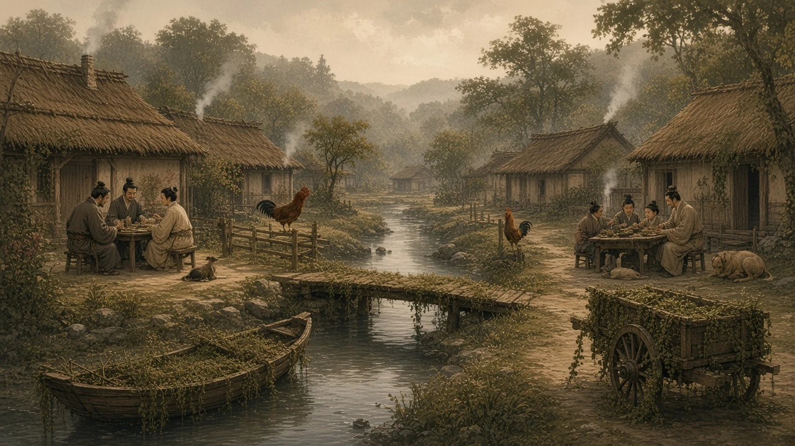
Less knowledge. People would be better off knowing less.
Fewer tools. Give up tools and renounce writing.
No envy. Stop envying the neighbors across the way.
Stay home. Lose the desire to travel or to wage war.
Sources: Ebrey, Ch. 2, p. 30; Laozi 80 outside the textbook .
This slide gives you the Laozi 's picture of the ideal society. In its philosophy, your textbook says, people would be better off if they knew less, gave up tools, renounced writing, stopped envying their neighbors, and lost their desire to travel or wage war (p. 30).
Compare that with the world of Lecture 1: iron tools, new cities, coins, written registers, conscript armies, strategists traveling between courts. The Laozi wants to undo all of it. One famous chapter, chapter 80, outside your textbook's quotations, imagines a small state with few people, where boats and carts go unused and weapons are never displayed; neighboring villages are so close that each can hear the other's roosters and dogs, yet people grow old and die without ever visiting.
Is this a dream of peace or a dream of standing still? Many readers find it beautiful; others find it a step backward. Notice that it is still advice to rulers: keep the state small and the people content.
The image is an AI-generated interpretation, not a historical record: two villages within earshot, with an unused bridge between them.
Why this matters: for Reading Guide Q8, this is the society the Daoists wanted instead of the Confucian one (p. 30).
Check yourself: List four things the Laozi says people should give up, and one thing from Lecture 1 each would undo.
Image: Two small villages face each other across a stream; their roosters and dogs can be heard, but nobody crosses the plank bridge. AI-generated interpretation, not a historical record.
Self-check · Segment 1 · not graded
Check Yourself: The Laozi and Doing Less
Answer each question from memory, out loud or on paper, then click Show answer . Nothing here is graded or recorded.
1. What did Daoists think happens when people strive to make things better?
Show answer
It generally makes things worse; they wanted rulers to leave people alone (p. 30).
2. Define Dao and wu wei in a few words each.
Show answer
Dao: the Way, the whole natural order. Wu wei: no action, acting without forcing (p. 30).
3. Why is water the Laozi’s model of the highest good?
Show answer
It benefits all creatures, does not compete, and settles in low places people disdain (p. 30).
4. According to Laozi 3, what happens if rulers stop honoring the worthy?
Show answer
The people will not compete; with no action, order will prevail (p. 30).
Missed one? Go back: daoist-reply concept-dao-wuwei laozi-water laozi-ruler
This self-check covers Segment 1. Answer each question from memory first, out loud or on paper, before you click Show answer. Pulling an idea out of memory is what makes it stick; rereading feels easier but works less well.
If you miss one, use the links at the bottom to go back to the slide that teaches it, reread its notes, and try again in a few minutes. Notice that the questions follow the segment's path: the Daoist reply, the two key terms, water, and the sage ruler. None of these answers is the answer to a Reading Guide question; they are building blocks for Question 8, which comes after the Zhuangzi segment (p. 30).
Why this matters: recalling facts without looking is the best preparation for writing an answer in your own words.
Check yourself: Which of the four questions was hardest, and which slide will you revisit?
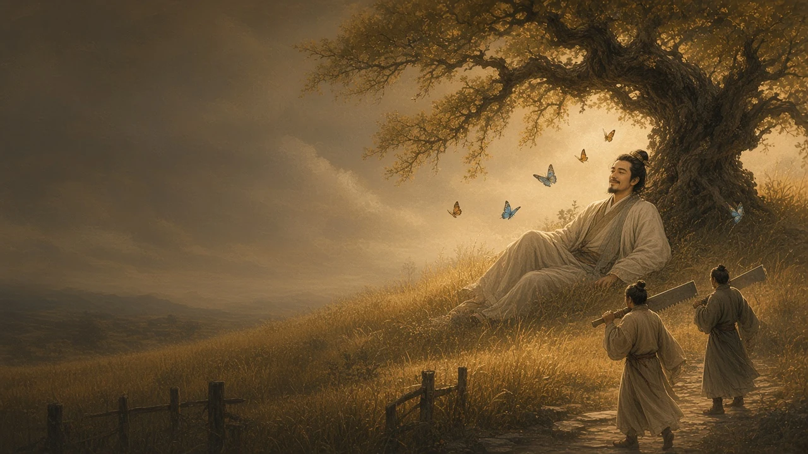
Segment 2 of 3 · Act II · 369–286 BCE
Zhuangzi: Stay Free
A real man who laughed at ambition, doubted words, and even doubted that death is bad.
A man dozes in the grass under a vast gnarled tree as butterflies drift around him; carpenters walk past without a glance. AI-generated interpretation, not a historical record.
Segment 2 begins. You meet Zhuangzi , the second great Daoist voice: the usefulness of the useless, the relativity of ordinary distinctions, a famous butterfly dream, his wife's death, and a wheelwright who insulted a duke's books (pp. 30–31). Then you see why many Chinese felt the pull of both Confucius and the Daoists (p. 31).
The image is an AI-generated interpretation, not a historical record: a useless tree that no carpenter wants, and a man asleep beneath it.
This segment finishes the evidence for Reading Guide Q8 (p. 30).
Check yourself: Guess before you start: how could being useless ever be useful?
Q8 story · The man and the book · 369–286 BCE
Zhuangzi Was a Real Man Who Was Proud to Stay Out of Politics
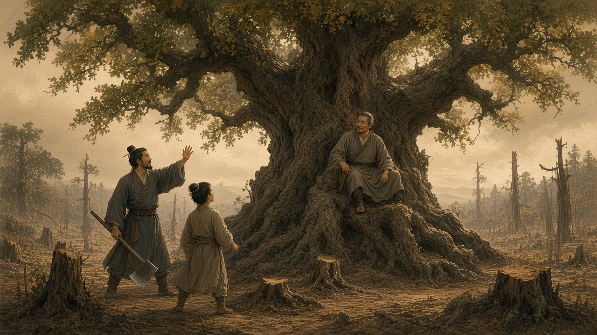
A real person. Unlike Laozi, Zhuangzi was a historical figure.
Shared ideas. He agreed with much of the Laozi.
Useless is useful. The crooked tree no carpenter wants lives the longest.
A wild book. Parables, flights of fancy, and invented talks with Confucius.
Independent study: Pierian Spring on Confucius meeting Laozi →
Sources: Ebrey, Ch. 2, pp. 30–31; Zhuangzi 4 outside the textbook .
This slide gives you the second Daoist author. Zhuangzi (369–286 BCE), the author of the book of the same name, was a historical figure who shared many of the central ideas of the Laozi , such as the usefulness of the useless and the relativity of ordinary distinctions (p. 30). Your textbook adds that he was proud of his disinterest in politics; you saw that in the tortoise story.
What does “the usefulness of the useless” mean? The book tells it with a tree, a story outside your textbook. A master carpenter walks past a giant oak at a village shrine and does not even look at it: its wood is so crooked and soft that it would make leaky boats and rotten coffins. That night the tree appears to him in a dream: the useful trees, it says, get cut down young; being useless is how I lived so long. In a world where useful men were drafted, taxed and sent to die, Zhuangzi saw survival in being of no use to the state.
The book Zhuangzi is full of parables, flights of fancy, and fictional meetings between historical figures, including Confucius and his disciples, yet it also takes on serious issues, including death (p. 31).
The image is an AI-generated interpretation, not a historical record.
Why this matters: for Reading Guide Q8, Zhuangzi shows the individual's role : stay free and alive, not useful to rulers (p. 30).
Check yourself: How could a tree, or a person, survive by being useless?
Image: Carpenters pass by a huge crooked tree; their master explains why no one ever cut it down, while Zhuangzi laughs. AI-generated interpretation, not a historical record.
Q8 concept · Relativity of distinctions
Concept: Relativity Means Big and Small, Right and Wrong, Depend on Where You Stand
Concept
Relativity of distinctions
Relativity : the idea that our labels, useful and useless, big and small, even dreaming and waking, depend on a point of view, not on the world itself.
Your view. To a frog in a well, a puddle is the ocean.
Labels. “Useful” means useful to someone, often to a ruler.
Doubt. Our sure distinctions may be only one angle on the Way.
Freedom. Seeing this frees the mind to wander, as Daoists wished.
Sources: Ebrey, Ch. 2, p. 30.
This slide gives you the second idea Zhuangzi shared with the Laozi : the relativity of ordinary distinctions (p. 30). A distinction is a line we draw between two things, such as useful and useless, big and small, right and wrong, life and death. Relative means it depends on the point of view.
Zhuangzi loved to flip points of view. A frog in a well thinks its puddle is the whole ocean; a giant bird flying ninety thousand miles up thinks the earth is small. Those two images come from the book Zhuangzi itself, outside your textbook. The tree on the last slide works the same way: it is useless to a carpenter and very useful to itself. If our labels depend on where we stand, then no one, not even a king or a Confucian teacher, has the final word on what is good. That is why the Daoists, your textbook says, sought to go beyond everyday concerns and let their minds wander freely (p. 30).
The video on the next slide uses Zhuangzi's most famous story to push this idea all the way to waking and dreaming.
Why this matters: for Reading Guide Q8, relativity explains why the Daoists refused to join the Confucian effort to fix the world (p. 30).
Check yourself: Give one example of a distinction that changes depending on who is looking.
Q8 story · Video · Zhuangzi 2
Watch: Zhuangzi Dreamed He Was a Butterfly, and Woke Unsure Who He Was
VIDEO
Watch for
What happens in the dream, and on waking
Why Zhuangzi cannot be sure which one he is
How the story makes ordinary distinctions relative
Video: “Zhuangzi’s Dream Unveiled: Daoist Philosophy Meets Descartes & Kant,” Seek Learning. Watch on YouTube ↗
Sources: Ebrey, Ch. 2, p. 30; Zhuangzi 2 outside the textbook ; video: “Zhuangzi’s Dream Unveiled,” Seek Learning.
This slide gives you a video on Zhuangzi's most famous story, the butterfly dream. Your textbook does not tell this story, but it names the idea behind it: the relativity of ordinary distinctions (p. 30). Press play and use the three “watch for” prompts.
What the video covers, in words (about five minutes): Zhuangzi tells how he once dreamed he was a butterfly, fluttering happily from flower to flower, forgetting that he was Zhuangzi. Suddenly he woke, and there he was, a man on his bed. But he could not tell whether he was Zhuangzi who had dreamed of being a butterfly, or a butterfly now dreaming it was Zhuangzi. The story comes from chapter 2 of the book. The video then offers several readings: that reality may be less certain than it seems, that personal identity can change, that all things are connected within the Dao, and that we should let go of rigid identities. It ends by comparing Zhuangzi with Descartes and Kant, European philosophers who also asked how we can know what is real.
Notice the Daoist point: the line between waking and dreaming, which seems the surest distinction of all, depends on where you stand. If even that line can blur, our confident labels about what is useful, honorable or good may be blurry too.
If the video will not play, use the YouTube link.
Why this matters: for Reading Guide Q8, the butterfly dream is the most memorable example of Zhuangzi's freedom of mind.
Check yourself: Retell the butterfly dream in two sentences, then say what distinction it questions.
Q8 story · A death in the family · Zhuangzi 18
Zhuangzi Stopped Weeping for His Wife When He Thought of the Seasons
Sources: Ebrey, Ch. 2, p. 31; Zhuangzi 18.
This slide gives you Zhuangzi on the hardest subject of all. The book, your textbook says, deals with serious issues, including death (p. 31). When a friend expressed shock that Zhuangzi was not weeping at his wife's death, Zhuangzi explained that he had wept at first (p. 31).
Then he began thinking back to before she had life or form or vital energy (in Chinese qi , chee, the energy in all living things). “In this confused amorphous realm, something changed and vital energy appeared; when the vital energy was changed, form appeared; with changes in form, life began. Now there is another change bringing death. This is like the progression of the four seasons of spring and fall, winter and summer” (18). Once he realized this, he stopped sobbing (p. 31). In the original story, outside your textbook, the friend is the logician Huizi, and he finds Zhuangzi drumming on a basin and singing.
Notice the Daoist move: death is not a tragedy against nature but one more change within the Way. Compare Confucius in Lecture 2, for whom mourning a family member properly, for the right length of time, was a core duty.
The image is an AI-generated interpretation, not a historical record.
Why this matters: for Reading Guide Q8, this is the individual's role within the natural order at its most personal (p. 31).
Check yourself: Why did Zhuangzi compare his wife's death to the seasons? How would a Confucian have judged his behavior?
Image: A shocked friend stands in a doorway as Zhuangzi sits calmly beside his wife's shrouded body; through the window, one tree shows spring, summer, autumn and winter. AI-generated interpretation, not a historical record.
Q8 story · The duke and the wheelwright · Zhuangzi 13
A Wheelwright Told a Duke His Books Were the Dregs of Dead Men
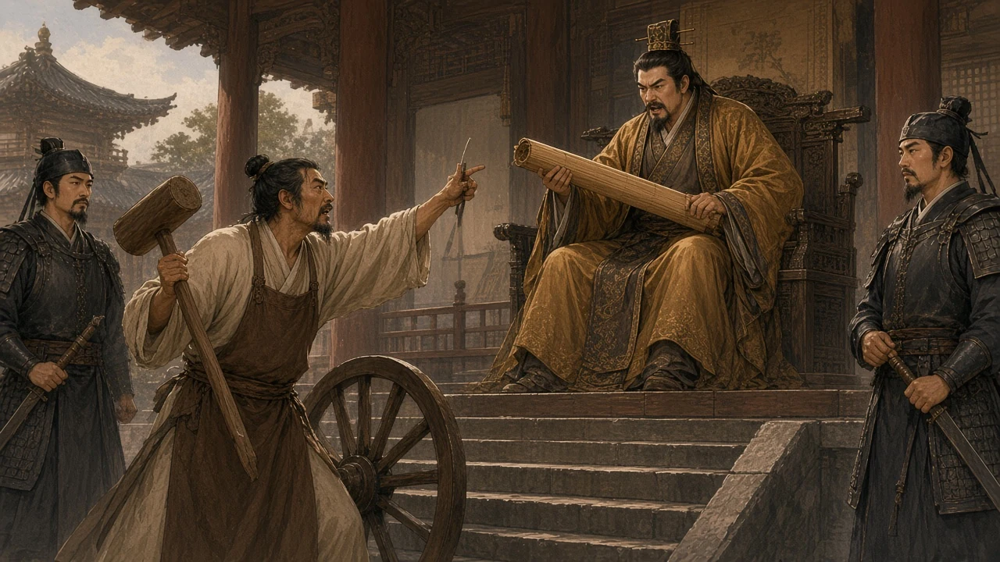
The insult. A wheelwright told a duke his books were dregs of dead men.
The threat. Explain yourself, said the duke, or be executed.
The hand knows. He felt how to chisel but could not say it.
The point. Real skill and wisdom cannot be passed on in books.
Ch. 2 L1 · Duke Huan of Qi ↗
Sources: Ebrey, Ch. 2, p. 31; Zhuangzi 13.
This slide gives you one of Zhuangzi's sharpest political parables. A wheelwright, a man who makes chariot wheels, insolently tells a duke that books are useless because all they contain are “the dregs of men long dead.” The duke, insulted, threatens to execute him if he cannot explain himself (p. 31).
The wheelwright explains that he can feel in his hand how to chisel a wheel, but he cannot describe it in words. “I cannot teach it to my son, and my son cannot learn it from me. So I have gone on for seventy years, growing old chiseling wheels. The men of old died in possession of what they could not transmit. So it follows that what you are reading are their dregs” (13) (p. 31). In the original, outside your textbook, the duke is Duke Huan of Qi, the first hegemon you met in Lecture 1, and the wheelwright is named Pian.
Here, your textbook says, Zhuangzi questions the validity of verbal reasoning and the sorts of knowledge conveyed in books (p. 31). Think about whom that hits: Confucius, who loved the ancients and told students to study; every shi who won a post with clever arguments.
The image is an AI-generated interpretation, not a historical record.
Why this matters: for Reading Guide Q8, this is how Zhuangzi answered Confucian study and debate (p. 31).
Check yourself: What can the wheelwright do that he cannot put into words? Name one skill of your own that works the same way.
Image: At the foot of palace steps, an old wheelwright holding a chisel looks up at a duke reading bamboo strips; the duke glares down in fury. AI-generated interpretation, not a historical record.
Q8 story · Two pulls · across Chinese history
Many Chinese Felt the Pull of Both Confucius and the Daoists
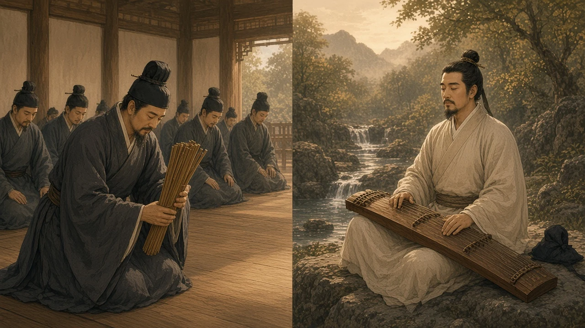
A rejection. Daoist ideas rejected many basic Confucian premises.
Yet both. Over Chinese history many people studied both schools.
Perspective. Frustrated officials found comfort in Laozi and Zhuangzi.
A pair. Service in public, Daoist freedom in private.
Sources: Ebrey, Ch. 2, p. 31.
This slide gives you a surprise ending to the Daoist story. The ideas of the Laozi and Zhuangzi , your textbook says, can be seen as a response to Confucianism, a rejection of many of its basic premises (p. 31). You might expect the two schools to stay enemies.
Instead, over the course of Chinese history, many people felt the pull of both Confucian and Daoist ideas and studied the writings of both schools. Even Confucian scholars who devoted much of their lives to public service might find that the teachings of Laozi or Zhuangzi helped them put their frustrations in perspective (p. 31). Picture an official whose proposals are ignored, or who is demoted and sent to a far province: Zhuangzi's tortoise and useless tree are a comfort.
Historians sometimes describe this as Confucian in public life and Daoist in private life, a common phrase outside your textbook. It is a simplification, but a useful one.
The image is an AI-generated interpretation, not a historical record: one official, at court and at rest.
Why this matters: for Reading Guide Q8, the Daoist alternative did not replace Confucian striving; it lived beside it (p. 31).
Check yourself: Why might a hardworking Confucian official read Zhuangzi?
Image: By day an official kneels at court with a report; by night the same man sits alone by a mountain stream with a zither, his court cap set aside. AI-generated interpretation, not a historical record.
Q8 story · Who else felt the pull · p. 31
Daoism Welcomed the Yielding, the Spontaneous Artist and the Quiet Ruler
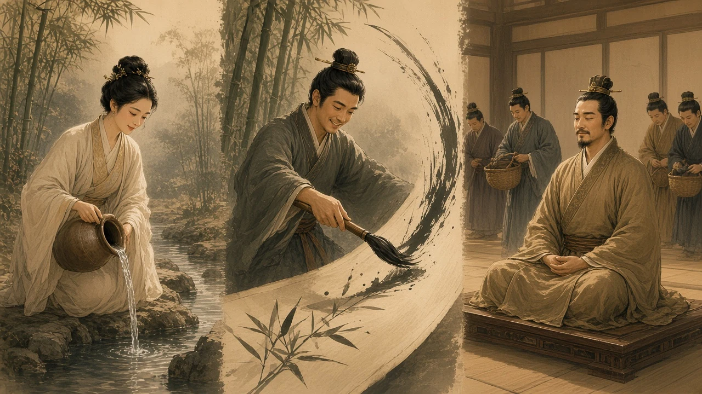
Yin. Daoism accepted the feminine, yielding side of yin and yang.
Artists. Spontaneity and freedom drew painters and poets.
Rulers. A ruler might hold great power just by being himself.
Contrast. Confucianism often seemed sternly masculine.
Sources: Ebrey, Ch. 2, p. 31.
This slide gives you three groups who found something in Daoism that Confucianism lacked. Whereas Confucianism often seems sternly masculine, your textbook says, Daoism was more accepting of feminine principles and even celebrated passivity and yielding (p. 31).
The feminine principle is yin , the dark, receptive, yielding half of the pair yin and yang ; yang is the bright, assertive half. You study yin and yang fully in the next lecture. Remember the Laozi 's water, which goes low and yields: that is yin praised as strength.
Second, those drawn to the arts were often drawn to Daoism, with its validation of spontaneity , acting naturally without plan, and freedom (p. 31). Think of the wheelwright's hand that knows more than words.
Third, rulers too saw merit in the Daoist notion of the ruler who can have great power simply by being himself without instituting anything (p. 31). That is the sage ruler of Laozi chapter 3, who engages in no action and order prevails.
The image is an AI-generated interpretation, not a historical record.
Why this matters: for Reading Guide Q8, these groups show how the Daoist vision reached beyond hermits (p. 31).
Check yourself: Name the three groups drawn to Daoism, and what each found there.
Image: A woman pours water calmly, a painter splashes ink in a free gesture, and a ruler sits still on a mat while his court runs smoothly around him. AI-generated interpretation, not a historical record.
Self-check · Segment 2 · not graded
Check Yourself: Zhuangzi and the Pull of Both
Answer each question from memory, out loud or on paper, then click Show answer . Nothing here is graded or recorded.
1. Why did Zhuangzi refuse the king of Chu’s offer?
Show answer
He would rather live free, like a tortoise dragging its tail in the mud, than be honored and dead (p. 30).
2. What two ideas did Zhuangzi share with the Laozi?
Show answer
The usefulness of the useless and the relativity of ordinary distinctions (p. 30).
3. Why did Zhuangzi stop weeping for his wife?
Show answer
He saw her death as a change like the progression of the four seasons (p. 31).
4. What did the wheelwright say about books, and why?
Show answer
They are the dregs of dead men; real skill cannot be put into words (p. 31).
5. Which people felt the pull of both Confucian and Daoist ideas?
Show answer
Many officials and scholars; Daoism also drew artists, rulers, and valued the feminine (p. 31).
Missed one? Go back: hook-tortoise zhuangzi-man zhuangzi-wife wheelwright both-paths
This self-check covers Segment 2. Answer from memory first, then click Show answer. If one stumps you, follow its link back, reread the slide and its notes, and try again later.
The five questions follow the segment's path: the tortoise, Zhuangzi's two big ideas, his wife's death, the wheelwright, and the pull of both schools. Together with the Laozi self-check, they are the building blocks for Reading Guide Question 8, which comes next. They are not its answer: the Reading Guide asks you to put the pieces together into an argument of your own (pp. 30–31).
Why this matters: Question 8 asks about society and the individual; these stories are your evidence for the individual.
Check yourself: Without looking, which Zhuangzi story would you use as evidence for the individual's place in the natural order?
Your turn · Reading Guide · Review Question 8
Reading Guide · Review Question 8
Review Question 8
How did Daoist thinkers like Laozi and Zhuangzi respond to the political and moral striving advocated by Confucians? Describe their alternative vision for society and the individual’s role within the natural order.
Open the Reading Guide ↗
Two parts: first the response to Confucian striving, then the alternative vision for society and the individual. Use one Laozi line and one Zhuangzi story as evidence.
Go back to the teaching slides: F · daoist-reply G · concept-dao-wuwei I · laozi-water K · laozi-ruler L · small-village B · hook-tortoise R · zhuangzi-wife S · wheelwright T · both-paths
This is Reading Guide Review Question 8, word for word. Open your Reading Guide with the green button and write your answer there; it is graded on Canvas, not here. The Reading Guide also asks you to copy the sentence on p. 30 beginning “The authors of…”; find it first, because it states the Daoist response in one line (p. 30).
How to build your answer. The question has two parts. Part one, the response : start from what Confucians wanted, moral and political effort by men of virtue (the Daoist reply slide), and state what the Daoists said about striving (p. 30). Part two, the alternative vision : for society, use the Laozi 's sage ruler and simple village (the Laozi chapter 3 and simple-village slides); for the individual, use Zhuangzi: the tortoise, the useless tree, his wife's death and the seasons, the wheelwright (pp. 30–31). Link each piece to the Dao, the natural order, from the concept slide.
Finish with a judgment: was the Daoist alternative a rejection of society, or a different way to order it? Support your judgment with the slide on why many felt the pull of both schools (p. 31).
Use the green links to revisit the teaching slides. No answer is given here; the self-check before this slide reviewed the pieces.
Why this matters: Q8 asks you to explain a rejection, so your answer must show both what Confucians wanted and what the Daoists offered instead.
Check yourself: Can you state the Daoist response in one sentence before you start writing?
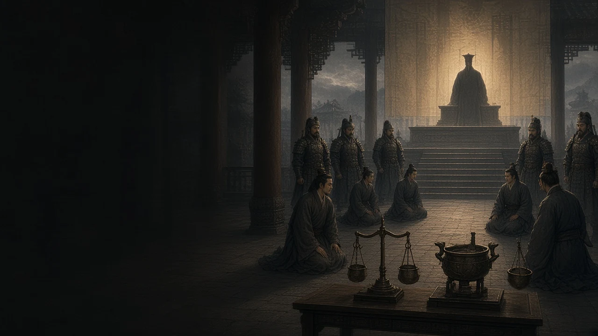
Segment 3 of 3 · Act III · 4th–3rd centuries BCE
The Legalists: Trust No One
Forget virtue. Write clear laws, reward and punish automatically, and the state will run itself.
A ruler sits alone behind a half-drawn screen on a high dais while officials kneel in separate rows, each watched by a guard. AI-generated interpretation, not a historical record.
Segment 3 begins. You meet the Legalists : why frightened rulers listened to them, the reforms of Lord Shang in the state of Qin, the warnings of Han Feizi, his attack on rule by virtue, and the laws found in a Qin official's tomb (pp. 31–32).
The image is an AI-generated interpretation, not a historical record: a ruler no one can read, officials who cannot trust one another.
This segment builds toward Reading Guide Q9 (p. 31).
Check yourself: Guess before you start: if you could not trust a single official, how would you make sure your orders were carried out?
Q9 story · A world of falling states · 4th–3rd centuries BCE
As State After State Fell, Frightened Rulers Listened to Experts in Power
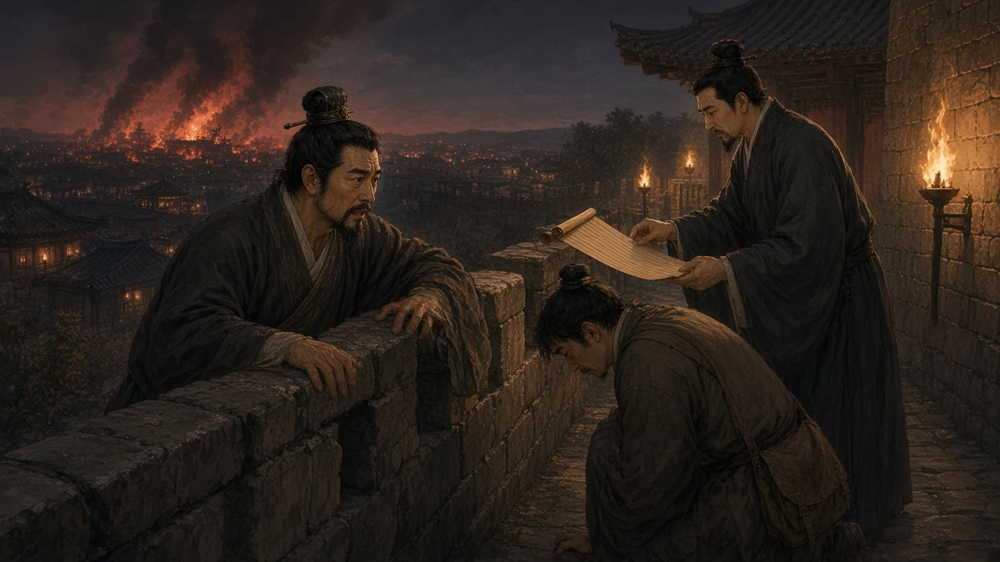
Fear. In the 4th and 3rd centuries, one small state after another was destroyed.
New experts. Theorists claimed expertise in accumulating power.
Their name. Called Legalists for their emphasis on rigorous laws.
Their claim. Strong government rests on laws and procedures, not morals.
Sources: Ebrey, Ch. 2, p. 31.
This slide gives you the reason Legalism caught on. Over the course of the fourth and third centuries BCE, as one small state after another was destroyed, rulers fearful that their state might be next were ready to listen to political theorists who claimed expertise in the accumulation of power (p. 31). Recall Lecture 1: dozens of states shrank to seven, and conquered nobles became shi looking for work.
These theorists, your textbook says, were labeled Legalists because of their emphasis on the need for rigorous laws. They argued that strong government depended not on the moral qualities of the ruler and his officials, as Confucians claimed, but on establishing effective laws and procedures (p. 31). As with Daoism, the label came later; the Legalists did not call themselves a school.
Notice the contrast with the Daoists you just studied. Both rejected Confucian virtue, but the Daoists said do less, and the Legalists said control more.
The image is an AI-generated interpretation, not a historical record.
Why this matters: Reading Guide Q9 points you to the sentence on p. 31 beginning “These theorists, labeled…”; it is your opening claim (p. 31).
Check yourself: Why were rulers of the late Warring States ready to listen to the Legalists?
Image: A worried ruler stares at a smoke-darkened horizon as a lean adviser unrolls a plan before him; a messenger kneels with news of another fallen state. AI-generated interpretation, not a historical record.
Q9 concept · Legalism
Concept: Legalism Ran a State on Clear Laws, Automatic Rewards and Sure Punishments
Concept
Legalism
Legalism : the view that a ruler gets order and power from clear written laws, enforced the same way every time with rewards and punishments, not from anyone’s virtue.
Laws. Clear, public, and the same for everyone below the ruler.
Rewards. Automatic payoffs for doing what the state wants.
Punishments. Sure penalties for breaking the rules.
Goal. Make people work hard and fight wars, and win.
Sources: Ebrey, Ch. 2, pp. 31–32.
This slide gives you the key term for Segment 3. Legalism is the name later historians gave to political thinkers who argued that order and power come from effective laws and procedures, not from the moral qualities of rulers and officials (p. 31).
The tools are simple. Make the laws and prohibitions clear. Make the rewards and punishments automatic, so everyone knows exactly what follows from each action. Then, Han Feizi says, officials and common people will be easy to govern (p. 31). Uniform laws get people to do things they would not otherwise be inclined to do, such as work hard and fight wars, which were essential to the goal of dominating all the other states (p. 32).
Notice what Legalism assumes about people: that they follow their own interests, so a smart ruler uses those interests instead of hoping to change them. Compare Xunzi in Lecture 2, who also thought people are born selfish but trusted teachers and ritual to reshape them. The recap link reopens that slide.
Why this matters: for Reading Guide Q9, these are the core tenets you will need to name (pp. 31–32).
Check yourself: Name the three tools of Legalism and the two things they were meant to make people do.
Q9 story · Qin’s capital market · ca. 359 BCE
To Prove His Laws Meant Business, Lord Shang Paid Gold to a Man Who Moved a Pole
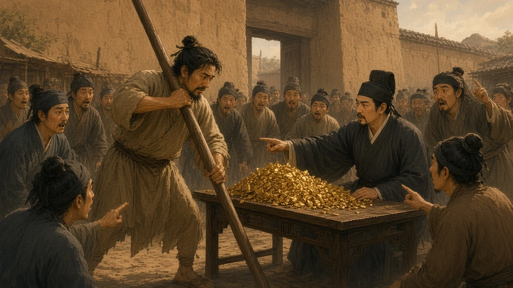
The test. A pole at the market’s south gate; move it north, win ten gold.
No takers. Nobody believed the government would pay.
Fifty gold. One man finally carried it, and was paid in full.
The lesson. The state’s promises, and threats, would be kept.
Independent study: Pierian Spring on how Lord Shang died →
Sources: Sima Qian, Shiji 68 outside the textbook ; Ebrey, Ch. 2, p. 31.
This slide gives you the most famous story about Lord Shang (also called Shang Yang, d. 338 BCE), the chancellor who led the state of Qin to adopt many Legalist policies in the fourth century BCE (p. 31). The story itself is outside your textbook; it comes from the historian Sima Qian, writing about 100 BCE.
Before announcing his new laws, Sima Qian says, Lord Shang had a wooden pole set up at the south gate of the capital's market and promised ten pieces of gold to anyone who would carry it to the north gate. People suspected a trick, and no one moved. He raised the reward to fifty. One man finally carried the pole, and Lord Shang paid him the fifty gold on the spot. Only then did he issue his laws. Whether or not it happened exactly so, it captures the Legalist idea: rewards and punishments must be automatic, or no one will believe them.
The image is an AI-generated interpretation of the story, not a historical record.
Why this matters: for Reading Guide Q9, the pole shows why Legalists cared so much that laws be clear and always enforced (p. 31).
Check yourself: Why did Lord Shang pay so much for such a small task? What did he want people to believe?
Image: At a crowded market gate, a startled commoner sets down a tall wooden pole while an official counts out a heap of gold onto a table. AI-generated interpretation, not a historical record.
Q9 story · Qin’s army · 4th century BCE
In Lord Shang’s Qin, Rank Came from Enemy Heads, Not Noble Birth
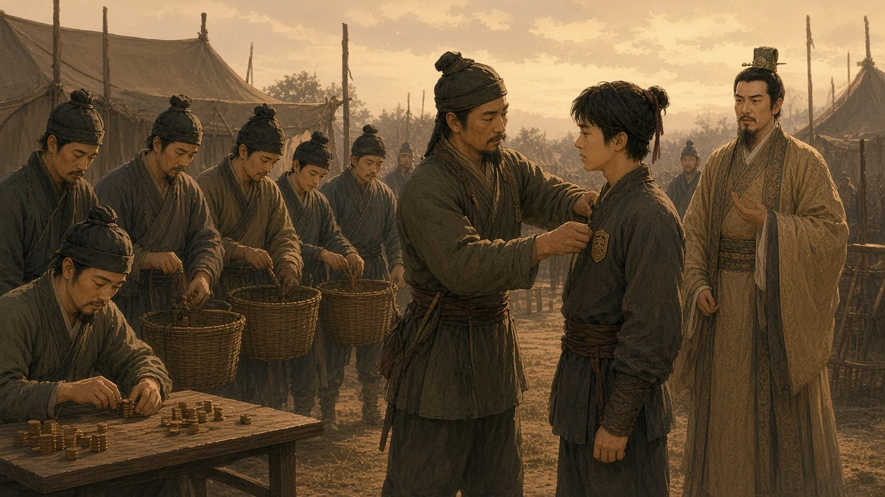
Old way. An aristocracy with inherited titles.
New way. Military ranks set by enemy heads cut off in battle.
Objective. A count anyone could check, not a family tree.
Recall. Lecture 1’s shi rose by talent; here rank was counted.
Ch. 2 L1 · merit instead of birth ↗
Sources: Ebrey, Ch. 2, p. 31.
This slide gives you Lord Shang's most startling reform. Instead of an aristocracy with inherited titles, social distinctions in Qin were based on military ranks determined by the objective criterion of the number of enemy heads cut off in battle (p. 31). Objective here means anyone could check it: count, do not ask whose son a man was.
Think about what that did. A farmer's son who fought well could climb above a noble's son who did not. Status became something the state handed out as a reward, and the state could take it away. That is Legalism in action: a clear rule, an automatic reward, and a population motivated to do what the ruler most needed, which was to fight.
Connect this with Lecture 1, where birth stopped mattering and shi rose by talent. Lord Shang pushed that change further than anyone, and harsher: talent was measured in heads.
The image is an AI-generated interpretation, not a historical record; it shows clerks counting tokens rather than the grisly reality.
Why this matters: for Reading Guide Q9, ranks by heads are your clearest example of Legalist policy implemented by the state of Qin (p. 31).
Check yourself: What replaced inherited titles in Lord Shang's Qin, and why would a ruler like that system?
Image: After a battle, a clerk at a camp table counts tally tokens brought by muddy soldiers while an officer hands one a rank badge; a defeated noble looks on. AI-generated interpretation, not a historical record.
Q9 story · Remaking Qin · 4th century BCE
Lord Shang Replaced Fiefs with Counties and Let Farmers Buy and Sell Land
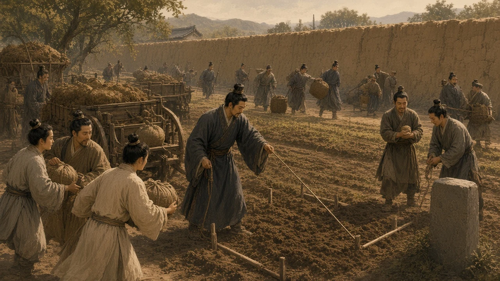
Counties. Old fiefs became counties run by appointed officials.
Migrants. Settlers from other states were offered land.
Land for sale. Farmers could buy and sell land, freed from serf duties.
The catch. Taxes and labor service for the state were heavy.
Ch. 2 L1 · from serf to taxpayer ↗
Sources: Ebrey, Ch. 2, p. 31.
This slide gives you the rest of Lord Shang's program. In place of the old fiefs, Qin divided the country into counties and appointed officials to administer them according to the laws decreed at court (p. 31). A fief belonged to a noble family; a county belonged to the state and was run by an official the ruler could fire.
To increase the population, migrants were recruited from other states with offers of land. To encourage farmers to work hard and improve their land, they were allowed to buy and sell it. Ordinary farmers were thus freed from serf-like obligations to the local nobility (p. 31). Recall the serf-to-taxpayer concept from Lecture 1; the recap link reopens it.
Now the catch, in your textbook's own words: direct control by the state could be even more onerous, because taxes and labor service obligations were heavy (p. 31). Onerous means burdensome. Freedom from the lord meant the state could reach every household directly.
The image is an AI-generated interpretation, not a historical record.
Why this matters: for Reading Guide Q9, counties, migrants and land sales show how Qin implemented Legalism, and at what cost (p. 31).
Check yourself: Who gained and who lost when Qin turned fiefs into counties?
Image: Migrant families with carts arrive at a Qin border post where an official measures out fields; behind them, long lines of laborers haul earth for a wall. AI-generated interpretation, not a historical record.
Q9 story · A prince of Han · d. 233 BCE
A Prince of Weak Han Who Studied with Xunzi Wrote Warnings for Kings
Sources: Ebrey, Ch. 2, p. 31.
This slide gives you the greatest Legalist writer. In the third century BCE, Legalism found its greatest exponent in Han Feizi (hahn fay-dze, d. 233 BCE) (p. 31). An exponent is someone who explains and champions an idea.
Han Feizi had studied with the Confucian master Xunzi , whom you met in Lecture 2, but had little interest in Confucian virtues (p. 31). Remember Xunzi's view that people are born selfish; the recap link reopens it. Han Feizi kept the selfishness and dropped the cure: no teachers, no ritual, just laws.
He was alarmed at the weakness of his own state, Han , one of the three states carved out of Jin, squeezed between powerful neighbors such as Qin. So he wrote to warn rulers of the political pitfalls awaiting them (p. 31). Outside your textbook, Sima Qian adds that Han Feizi was a prince of Han's ruling house and a poor speaker, which may be why he wrote so much.
The image is an AI-generated interpretation, not a historical record.
Why this matters: for Reading Guide Q9, Han Feizi is the thinker the question names; the next three slides give his tenets (p. 31).
Check yourself: Who was Han Feizi's teacher, and which of that teacher's ideas did he keep?
Image: By lamplight, a young prince in fine but worn robes writes on bamboo strips while a map on the wall shows his small state squeezed between huge neighbors. AI-generated interpretation, not a historical record.
Q9 story · Han Feizi’s warning · Han Feizi 17
Han Feizi Warned Kings to Trust No One, Not Even Their Wives
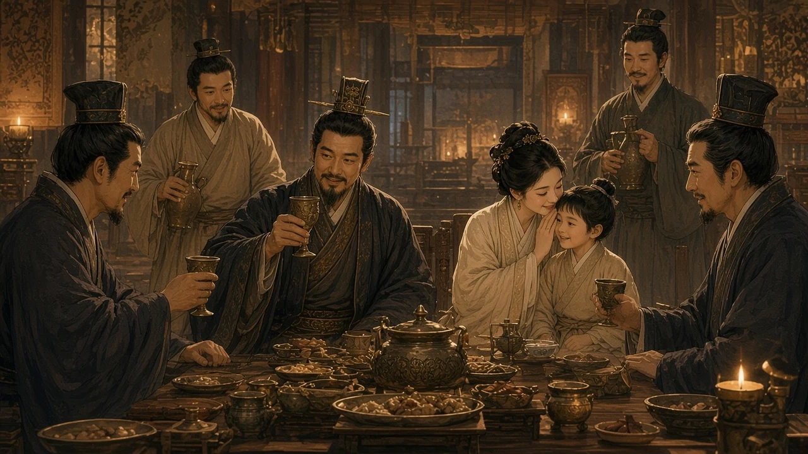
Trust is danger. To trust someone is to fall under that person’s control.
Even family. Wives and concubines think of their own sons’ interests.
Keep secrets. Hide your intentions; let officials compete.
No warmth. No affection or candor in a ruler’s relationships.
Ch. 2 L1 · rival sons and mothers’ states ↗
Sources: Ebrey, Ch. 2, p. 31; Han Feizi 17.
This slide gives you Han Feizi's chilling advice. Rulers had to be careful where they placed their trust, he warned, for “when the ruler trusts someone, he falls under that person's control” (17) (p. 31).
This was true, he said, even of wives and concubines (secondary wives of a ruler), who think of the interests of their sons (p. 31). A consort whose son might become heir has her own reasons to want the king to die early. Recall from Lecture 1 how rival sons fled to their mothers' states and came back with armies.
Given subordinates' tendency to pursue their own selfish interests, Han Feizi said, the ruler should keep them ignorant of his intentions and control them by manipulating competition among them. Warmth, affection or candor should have no place in his relationships with others (p. 31). Compare Confucius's five relationships from Lecture 2, built on care and mutual duty: Han Feizi turns every one of them into a danger.
The image is an AI-generated interpretation, not a historical record.
Why this matters: for Reading Guide Q9, distrust and secrecy are core tenets as articulated by Han Feizi (p. 31).
Check yourself: Why did Han Feizi think a ruler should not trust even his wife? What should he do instead?
Image: At a palace banquet a king raises his cup; behind their smiles his consort, his heir and his ministers each glance toward their own schemes. AI-generated interpretation, not a historical record.
Q9 story · The argument with Confucius · 3rd century BCE
Han Feizi Called Rule by Virtue Naive: Even Parents Calculate
Confucius Lead by virtue and ritual; people gain shame and standards.
Good rulers make good subjects.
Han Feizi Virtue is naive; even parents calculate, favoring sons over daughters.
Clear laws and automatic rewards make people easy to govern.
The key step: if parents are not selfless, rulers will not be either.
Ch. 2 L2 · “Lead them by virtue” ↗
Sources: Ebrey, Ch. 2, p. 31; Analects 2.3.
This slide gives you the heart of Reading Guide Q9: why Legalists thought Confucian virtue was not enough. Han Feizi saw the Confucian notion that government could be based on virtue as naive , meaning innocent of how the world really works (p. 31).
His argument starts at home. Even parents calculate their long-term advantage in favoring sons over daughters (p. 31). In his world a son carried on the family and supported his parents in old age, while a daughter married into another family; Han Feizi used the uneven way parents treated them as proof that even the closest love is mixed with calculation. If parents are not selfless, one cannot expect rulers to be more selfless than parents (p. 31).
So what works instead? If rulers would make the laws and prohibitions clear and the rewards and punishments automatic, then the officials and common people would be easy to govern (p. 31). Put that beside Confucius in Lecture 2: “Lead the people by means of government policies and regulate them through punishments, and they will be evasive and have no sense of shame” (2.3) (p. 27). Han Feizi answered, in effect: shame is not needed if the punishment is certain.
Why this matters: for Reading Guide Q9, this comparison is your evidence for the second half of the question. Build your answer as an argument: Han Feizi's view of people, his example, his conclusion (p. 31).
Check yourself: How did Han Feizi use parents to argue against rule by virtue?
Q9 story · What the laws were for · pp. 31–32
Clear Laws Would Make People Do What They Would Not Choose: Work Hard and Fight
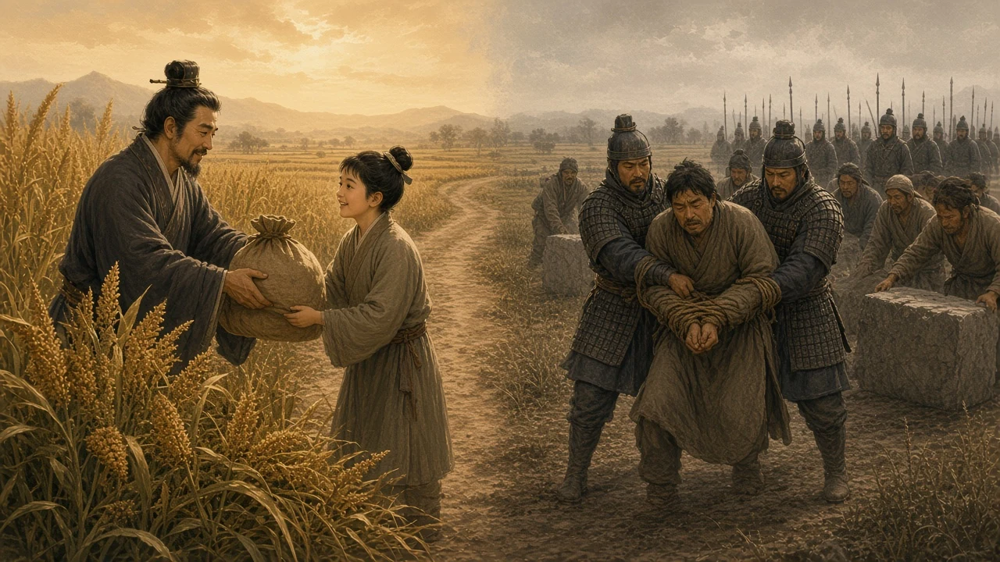
Clear laws. Make the laws and prohibitions clear to all.
Automatic. Rewards and punishments follow every time, no exceptions.
Work and war. People then do what they would not choose: farm and fight.
The goal. Hegemony over all the other states.
Ch. 2 L1 · hegemon ↗
Sources: Ebrey, Ch. 2, pp. 31–32.
This slide gives you what the Legalist machine was for. If rulers made the laws and prohibitions clear and the rewards and punishments automatic, Han Feizi argued, officials and common people would be easy to govern (p. 31).
Then comes the purpose. Uniform laws get people to do things they would not otherwise be inclined to do, such as work hard and fight wars, which were essential to the goal of establishing hegemony over all the other states (p. 32). You met the word hegemon in Lecture 1: the leading power among the states. By the third century the goal was no longer to lead the other states but to swallow them.
Notice how this fits Lord Shang's Qin: rank for enemy heads rewarded fighting; land that farmers could buy and sell rewarded hard work; heavy taxes and labor service collected the results. Laws, rewards and punishments turned a whole population into farmers and soldiers for the state.
The image is an AI-generated interpretation, not a historical record: one law, a reward on one side of the road and a punishment on the other.
Why this matters: for Reading Guide Q9, this links Han Feizi's tenets to Qin's practice and to its success in war (pp. 31–32).
Check yourself: What two things did Legalists want laws to make people do, and why did a Warring State need both?
Image: In one field a farmer who met his quota receives a sack of grain; across the road, an idler is marched off to a labor gang; conscripts drill beyond. AI-generated interpretation, not a historical record.
Q9 story · A Qin official’s tomb · 3rd century BCE
A Qin Official Was Buried with the Rules He Had to Obey
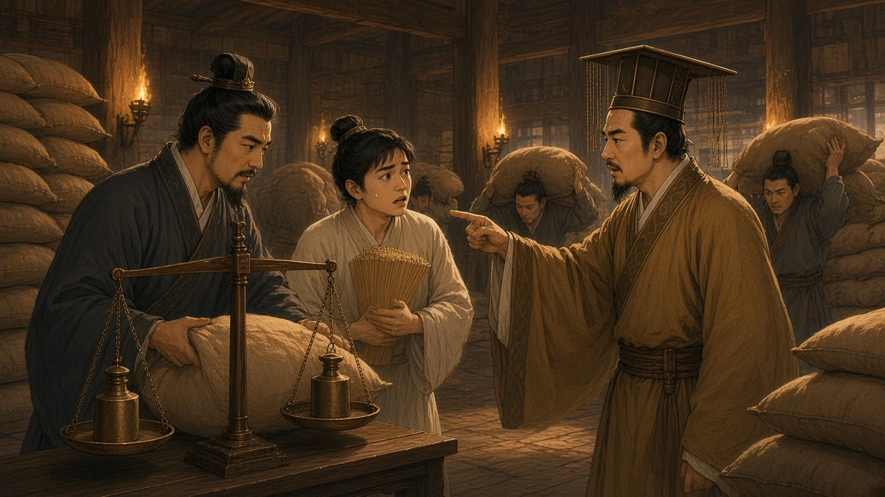
The tomb. A third-century Qin official was buried with legal texts.
The rules. Accounts, supervising staff, penal labor, investigations.
Fines. Officials who broke these statutes were fined.
The point. Laws bound officials as tightly as commoners.
Sources: Ebrey, Ch. 2, p. 32; Shuihudi tomb 11 outside the textbook .
This slide gives you archaeological evidence that Legalist laws really ran a state. The laws of the Legalists, your textbook says, were designed as much to constrain officials as to regulate the common people (p. 32).
The third-century BCE tomb of a Qin official has yielded statutes , written laws, detailing the rules for keeping accounts, supervising subordinates, managing penal labor (convicts forced to work for the state), conducting investigations, and many other responsibilities. Those who violated these statutes were fined (p. 32).
The tomb is not named in your textbook. It is usually identified as tomb 11 at Shuihudi (shway-hoo-dee) in Hubei province, excavated in 1975. The official, named Xi, was buried with more than a thousand bamboo strips of laws and records about 217 BCE, just after Qin unified China, so the rules cover the years before and after unification. Those details are outside your textbook. Imagine being buried with the rulebook you had to obey.
The image is an AI-generated interpretation, not a historical record: an inspection like the ones the statutes required.
Why this matters: for Reading Guide Q9, the statutes show Legalism implemented by the state of Qin , with officials themselves under the law (p. 32).
Check yourself: Name two kinds of rules found in the Qin official's tomb. Whom did they control?
Image: By torchlight in a granary, an inspector weighs a sack while a nervous Qin clerk checks his account strips; a senior official notes the shortfall. AI-generated interpretation, not a historical record.
Q9 story · Only Qin went all the way · 3rd century BCE
Legalists Allowed No Debate, and Only Qin Followed Them All the Way
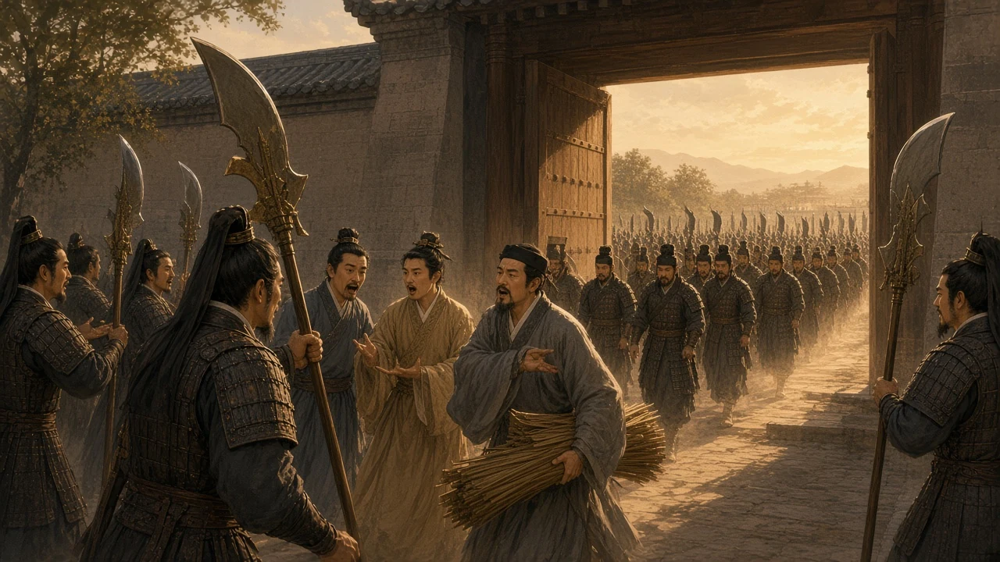
No debate. Legalists saw no value in intellectual debate or private opinion.
No questions. No one should undermine the ruler’s laws by questioning them.
Only Qin. Several states tried Legalist ideas; only Qin followed them systematically.
What next. Qin’s extraordinary but brief success comes in Chapter 3.
Ch. 2 L1 · the hundred schools ↗
Sources: Ebrey, Ch. 2, p. 32.
This slide gives you the last Legalist tenet and where it led. Legalism saw no value in intellectual debate or private opinion. The ruler should not allow others to undermine his laws by questioning them (p. 32). Think back to the hundred schools of Lecture 1, a world of traveling persuaders arguing at every court. The Legalists wanted to shut that world down.
Rulers of several states adopted some Legalist ideas, your textbook says, but only the state of Qin systematically followed them. The extraordinary but brief success Qin had with these policies is the subject of Chapter 3 (p. 32). In 221 BCE Qin conquered every other state and created China's first empire, and it fell only fifteen years later.
Notice the irony that sets up the next chapter. The Legalist machine won the war of all against all, but a system that trusted no one, allowed no debate and squeezed everyone with taxes and labor also made enemies everywhere.
The image is an AI-generated interpretation, not a historical record.
Why this matters: for Reading Guide Q9, Qin is the state that implemented Legalism; ending your answer with its results makes a strong judgment (p. 32).
Check yourself: Why would a Legalist ruler ban debate? Which state followed Legalism most fully?
Image: Guards turn away a crowd of arguing scholars at a palace gate as, beyond the walls, an immense Qin army marches out in perfect order. AI-generated interpretation, not a historical record.
Self-check · Segment 3 · not graded
Check Yourself: The Legalists and Qin
Answer each question from memory, out loud or on paper, then click Show answer . Nothing here is graded or recorded.
1. According to the Legalists, what did strong government depend on?
Show answer
Effective laws and procedures, not the moral qualities of the ruler and officials (p. 31).
2. How were social ranks decided in Lord Shang’s Qin?
Show answer
By military rank, counted by the number of enemy heads cut off in battle (p. 31).
3. Why should a ruler not trust even his wife, according to Han Feizi?
Show answer
Wives and concubines think of their sons’ interests; trust puts a ruler under another’s control (p. 31).
4. What example did Han Feizi use to call rule by virtue naive?
Show answer
Even parents calculate their advantage, favoring sons over daughters (p. 31).
5. What did the statutes in a Qin official’s tomb show?
Show answer
Rules for officials’ accounts, staff, penal labor and investigations, with fines for violators (p. 32).
Missed one? Go back: legalist-why shang-ranks trust-no-one virtue-naive official-statutes
This self-check covers Segment 3. Answer from memory first, then click Show answer. Retrieval practice, pulling ideas out of memory, is the best preparation for the Reading Guide question that comes next.
If you miss one, follow its link back, reread the slide and notes, and try again later. The questions follow the segment's path: the Legalist claim, Lord Shang's Qin, Han Feizi's warnings, his attack on virtue, and the statutes from the Qin official's tomb. These are building blocks for Reading Guide Question 9, not its answer (pp. 31–32).
Why this matters: Question 9 asks for tenets and for Qin's practice; these five answers cover both halves.
Check yourself: Which Lord Shang reform and which Han Feizi warning would you use first as evidence?
Your turn · Reading Guide · Review Question 9
Reading Guide · Review Question 9
Review Question 9
Analyze the core tenets of Legalism as articulated by Han Feizi and implemented by the state of Qin. Why did Legalist thinkers argue that Confucian virtue was fundamentally insufficient for governing a state?
Open the Reading Guide ↗
Two parts: first the core tenets, as Han Feizi stated them and as Qin carried them out; then the argument against Confucian virtue. Use one Qin reform and one Han Feizi passage.
Go back to the teaching slides: Y · legalist-why Z · concept-legalism AB · shang-ranks AC · shang-counties AE · trust-no-one AF · virtue-naive AG · work-and-fight AH · official-statutes AI · no-debate
This is Reading Guide Review Question 9, word for word. Open your Reading Guide with the green button and write your answer there. The Reading Guide also asks you to copy the sentence on p. 31 beginning “These theorists, labeled…”; it gives you the Legalist claim in one line (p. 31).
How to build your answer. Part one, the core tenets : name them from the concept slide (clear laws, automatic rewards and punishments), then show them twice, once as Han Feizi articulated them (trust no one, secrecy, competition among officials, no debate) and once as Qin implemented them (ranks by enemy heads, counties, land sales, heavy taxes, the statutes in the official's tomb) (pp. 31–32). Part two, why virtue was insufficient : use the comparison slide; lay out Han Feizi's view of human motives, his example of parents, and his conclusion about rulers (p. 31).
Finish with a judgment supported by evidence: was Han Feizi realistic or too cynical? Use Qin's results on the no-debate slide (p. 32).
Use the green links to revisit the teaching slides. No answer is given here; the self-check before this slide reviewed the pieces.
Why this matters: Q9 links ideas to practice; the strongest answers show each tenet at work in Qin.
Check yourself: Can you name three tenets and two Qin policies before you start writing?
Closing · Back on the riverbank · 3rd century BCE
One Man Kept Fishing While a Kingdom Built a Machine of Law
Sources: Ebrey, Ch. 2, pp. 30–32.
Come back to the riverbank where this lecture began. Zhuangzi turned down the king of Chu's offer because he would rather be a live tortoise dragging its tail in the mud than an honored dead one (p. 30). Across the river, in this image, the state that took the opposite path marches past: Qin, which followed Legalist policies more systematically than any other state and was about to conquer them all (p. 32).
Put the three answers side by side. Confucius said good men leading by example would restore order. The Daoists said striving makes things worse: follow the Way, leave the people alone, let your mind wander freely (p. 30). The Legalists said strong government depends on effective laws and procedures, not on anyone's virtue (p. 31). Many Chinese later felt the pull of both Confucius and the Daoists (p. 31); Qin bet everything on the Legalists.
The image is an AI-generated interpretation, not a historical record, returning to the cold open's scene.
In the next lecture you meet the rest of the Hundred Schools: natural philosophers who explained the world with yin and yang, the world of spirits and demons, and the southern state of Chu, whose king tried to hire Zhuangzi.
Why this matters: Reading Guide Q8 and Q9 ask you to set these answers against Confucius; this slide is your summary map.
Check yourself: In one sentence each, how would Confucius, Zhuangzi and Han Feizi end the wars?
Image: Zhuangzi fishes calmly in the reeds as, across the river, an endless Qin army column marches past under dark banners. AI-generated interpretation, not a historical record.
Beyond the lecture
Pierian Spring
Independent Study
Today's lecture ends here. Continue on your own: the stories below finish this chapter's history, and each ends with a review question to answer.
"A little learning is a dang'rous thing;Alexander Pope, An Essay on Criticism , 1711
Welcome to the Pierian Spring. In Greek myth its water brought knowledge. These slides are required independent study, not covered in the lecture; read them on your own with the notes open.
Five slides follow. Three deepen the Daoists: Zhuangzi on the fear of death (p. 31), an imagined meeting of Confucius and Laozi, and the bamboo Laozi found in 1993. Two finish the Legalist story: the deaths of Lord Shang and Han Feizi (p. 31). Each ends with a review question to answer.
Check yourself: Before you start, state the Daoist and the Legalist answer to Confucius in one sentence each.
Independent study · Zhuangzi on death · Zhuangzi 2
Zhuangzi Asked Whether Death Might Be Like a Captive Girl’s Fear of the Palace
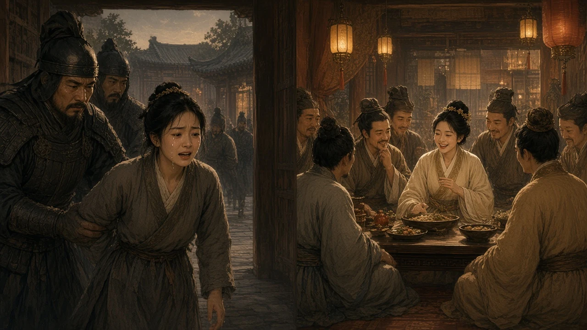
The question. Can we be sure that life is better than death?
The captive girl. Terrified to learn she will be the king’s concubine.
The surprise. In the palace she finds delights and regrets her tears.
The lesson. We fear what we do not know; death may hold delights too.
Review question to answer · Q8
How did Daoist thinkers like Laozi and Zhuangzi respond to the political and moral striving advocated by Confucians? Describe their alternative vision for society and the individual’s role within the natural order.
Open the Q8 checkpoint: Daoists against striving
← Back to the lecture: Zhuangzi and his wife
Sources: Ebrey, Ch. 2, p. 31; Zhuangzi 2.
This independent-study slide finishes Zhuangzi's thinking about death. In the lecture you saw him stop weeping for his wife when he thought of the seasons. Here your textbook gives his bolder question: can we be sure life is better than death? (p. 31)
People fear what they do not know, he says, the same way a captive girl will be terrified when she learns she is to become the king's concubine. Perhaps people will discover that death has as many delights as life in the palace (p. 31). In the full story, outside your textbook, the girl is Lady Li, daughter of a border guard; she weeps until her robe is soaked, then, once she lives in the palace, shares the king's bed and eats fine meats, she wonders why she ever cried.
Notice what Zhuangzi is doing. He does not claim to know that death is good. He uses the girl to show that our fear rests on ignorance, which fits the relativity of ordinary distinctions you met in the lecture.
The image is an AI-generated interpretation, not a historical record.
Why this matters: for Reading Guide Q8, this parable shows how far Zhuangzi took the individual's acceptance of the natural order (p. 31).
Check yourself: What does the captive girl's fear have in common with the fear of death, in Zhuangzi's view?
Image: A terrified captive girl is led weeping toward a palace gate; inside, the same young woman laughs at a feast in silk robes. AI-generated interpretation, not a historical record.
Independent study · An imagined meeting · Zhuangzi and Shiji
Later Stories Had Confucius Visit Laozi and Come Away Amazed
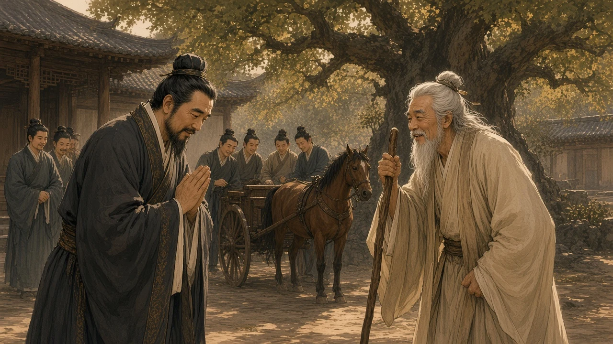
Invented meetings. The Zhuangzi stages talks between Confucius and others.
The famous one. Confucius visits Laozi to ask about ritual.
The rebuke. Laozi tells him to drop his pride and ambitions.
A dragon. Confucius tells students Laozi is like a dragon he cannot grasp.
Review question to answer · Q8
How did Daoist thinkers like Laozi and Zhuangzi respond to the political and moral striving advocated by Confucians? Describe their alternative vision for society and the individual’s role within the natural order.
Open the Q8 checkpoint: Daoists against striving
← Back to the lecture: Zhuangzi the man
Sources: Ebrey, Ch. 2, p. 31; Zhuangzi ; Sima Qian, Shiji 63 outside the textbook .
This independent-study slide follows one of the fictional encounters your textbook mentions. The Zhuangzi , it says, is filled with parables, flights of fancy, and fictional encounters between historical figures, including Confucius and his disciples (p. 31). The most famous is a meeting between Confucius and Laozi.
In the version told by the historian Sima Qian about 100 BCE, outside your textbook, Confucius travels to the Zhou capital to ask Laozi about ritual. Laozi tells him that the men he admires are long dead and only their words remain, and advises him to get rid of his proud airs, his many desires and his ambitious plans, because they do him no good. Confucius returns and tells his students: birds fly, fish swim, beasts run, and each can be caught; but a dragon rides the wind and clouds, and Laozi is like a dragon.
Historians doubt the meeting happened, especially since Laozi may not have been a real person (p. 30). The story matters because it shows how Daoists used Confucius as a character, sometimes mocking him and sometimes making him a convert.
The image is an AI-generated interpretation of a legend, not a historical record.
Why this matters: for Reading Guide Q8, the meeting dramatizes the Daoist response to Confucian striving (p. 30).
Check yourself: What did Laozi tell Confucius to give up, and why does that fit the Daoist critique?
Image: Confucius, formal and earnest, bows to an old, rumpled Laozi under a tree; his disciples wait nervously by the carriage. AI-generated interpretation, not a historical record.
Independent study · A teacher’s tomb in Chu · ca. 300 BCE
A Bamboo Laozi Buried About 300 BCE Was Older Than Scholars Expected
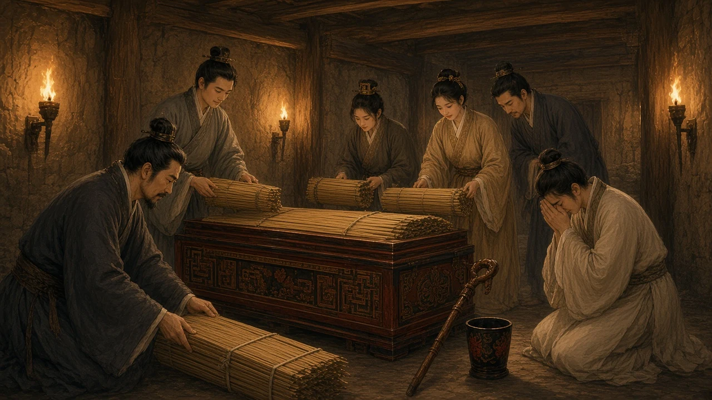
The find. In 1993 archaeologists opened a looted tomb at Guodian, in Chu.
The books. Bamboo strips held about two-fifths of the Laozi.
The date. The tomb was closed about 300 BCE.
The meaning. Laozi sayings circulated before the 3rd century, in smaller pieces.
Review question to answer · Q8
How did Daoist thinkers like Laozi and Zhuangzi respond to the political and moral striving advocated by Confucians? Describe their alternative vision for society and the individual’s role within the natural order.
Open the Q8 checkpoint: Daoists against striving
← Back to the lecture: Master Lao and his book
Sources: Guodian tomb 1, Jingmen, Hubei outside the textbook ; Ebrey, Ch. 2, p. 30.
This independent-study slide shows how archaeology can test a textbook date. Your textbook says the Laozi and the Zhuangzi date to the third century BCE (p. 30). A discovery outside your textbook pushes part of the Laozi a little earlier.
In 1993, after tomb robbers broke into a small tomb at Guodian (gwoh-dyen), near Jingmen in Hubei province, archaeologists excavated it. It lay in the old heartland of Chu. Inside were about eight hundred bamboo strips with texts, among them three bundles containing material found in the Laozi , roughly two-fifths of the book, in a different order and with some differences in wording. The tomb is dated to about 300 BCE; some scholars think its occupant was a tutor at the Chu court.
So sayings now in the Laozi were circulating by the late fourth century, and perhaps not yet as one finished book. That fits what your textbook says about early books in Lecture 2: followers added, cut and rearranged them over time (p. 26).
The image is an AI-generated interpretation of a burial like this one, not a historical record.
Why this matters: for Reading Guide Q8, it reminds you that the Laozi grew in layers and is not one man's book (p. 30).
Check yourself: What did the Guodian find suggest about when the Laozi was written?
Image: Mourners lower bundles of bamboo books into a teacher's wooden coffin chamber; his old student weeps beside a lacquered cup. AI-generated interpretation, not a historical record.
Independent study · Lord Shang’s fall · 338 BCE
Fleeing for His Life, Lord Shang Was Turned Away by His Own Law
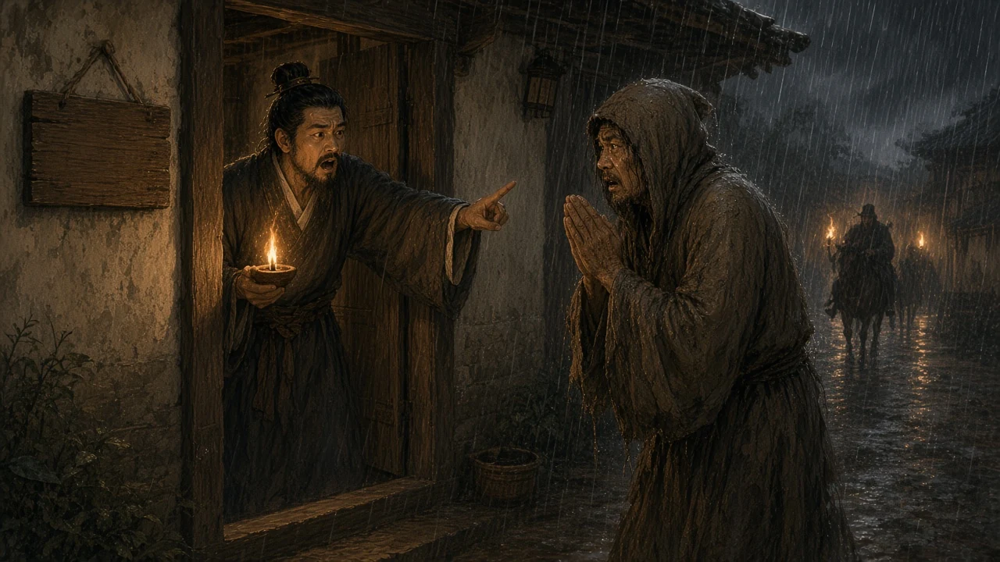
His patron dies. Duke Xiao of Qin died in 338 BCE; enemies accused Lord Shang.
The inn. Fleeing, he sought a room; guests without papers were banned.
His own law. The innkeeper refused: that was Lord Shang’s law.
The end. Hunted down and killed; his body was torn apart by chariots.
Review question to answer · Q9
Analyze the core tenets of Legalism as articulated by Han Feizi and implemented by the state of Qin. Why did Legalist thinkers argue that Confucian virtue was fundamentally insufficient for governing a state?
Open the Q9 checkpoint: Legalism and Qin
← Back to the lecture: Lord Shang’s pole
Sources: Sima Qian, Shiji 68 outside the textbook ; Ebrey, Ch. 2, p. 31.
This independent-study slide finishes Lord Shang's story. Your textbook gives only his death date, 338 BCE (p. 31). The rest comes from the historian Sima Qian, outside your textbook.
Lord Shang's reforms made Qin strong, Sima Qian says, but they made him many enemies among Qin's nobles, including the heir to the throne, whose tutors he had punished. When his patron, Duke Xiao of Qin, died in 338 BCE, the new ruler's men accused him of plotting rebellion. Lord Shang fled toward the border and asked for a room at an inn. The innkeeper, not knowing who he was, refused: under Lord Shang's own laws, anyone who lodged a guest without proper identification would be punished. Lord Shang sighed that his laws had come to this. He tried to escape to another state, was hunted down and killed, and his body was torn apart by chariots as a warning; his family was wiped out.
Notice the Legalist logic biting its maker: an automatic law makes no exceptions, not even for its author. Yet Qin kept his laws.
The image is an AI-generated interpretation of the story, not a historical record.
Why this matters: for Reading Guide Q9, this is Legalism implemented so thoroughly that it caught its creator (p. 31).
Check yourself: Why did the innkeeper refuse Lord Shang, and what does that say about Legalist law?
Image: At night, a hooded fugitive pleads at the door of a roadside inn; the frightened innkeeper shakes his head and points to the law. AI-generated interpretation, not a historical record.
Independent study · A Legalist in a Qin prison · 233 BCE
The King of Qin Loved Han Feizi’s Writings, Then Let Him Die in Prison
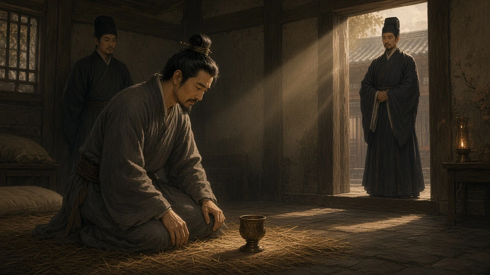
An admirer. The king of Qin read Han Feizi and wished to meet him.
In Qin. Han Feizi came to Qin as an envoy from Han.
A rival. Li Si, his fellow student under Xunzi, warned the king against him.
233 BCE. Jailed, he was sent poison and died.
Review question to answer · Q9
Analyze the core tenets of Legalism as articulated by Han Feizi and implemented by the state of Qin. Why did Legalist thinkers argue that Confucian virtue was fundamentally insufficient for governing a state?
Open the Q9 checkpoint: Legalism and Qin
← Back to the lecture: Han Feizi
Sources: Ebrey, Ch. 2, p. 31; Sima Qian, Shiji 63 outside the textbook .
This independent-study slide finishes Han Feizi's story. Your textbook gives his death date, 233 BCE, and says he had studied with Xunzi (p. 31). The details come from the historian Sima Qian, outside your textbook.
The king of Qin, the man who would later unify China as the First Emperor, read Han Feizi's essays and said he would die content if he could meet their author. When Qin attacked Han, Han sent Han Feizi to Qin as an envoy. But Li Si (lee suh), a high Qin official who had studied with Xunzi alongside Han Feizi, warned the king that a prince of Han would always serve Han, not Qin. Han Feizi was thrown in prison, and Li Si sent him poison. The king changed his mind and sent a pardon, too late.
Notice the grim fit with Han Feizi's own advice: trust no one, keep rivals competing, let no warmth soften your judgment. The machine he described consumed him. Li Si went on to serve the First Emperor as chief minister, as you will see in Chapter 3.
The image is an AI-generated interpretation of the story, not a historical record.
Why this matters: for Reading Guide Q9, Han Feizi's life shows his tenets at work in the state of Qin (p. 31).
Check yourself: How did Han Feizi's death illustrate his own warning about trust?
Image: In a dim prison cell, Han Feizi stares at a cup of poison set before him by a guard, while in the doorway a smooth court official watches. AI-generated interpretation, not a historical record.
Sources and image credits
The Stories in This Deck Rest on These Sources
Your textbook
Patricia Buckley Ebrey, A History of China , Chapter 2, “Philosophers and Warring States During the Eastern Zhou Period (770–256 BCE),” pp. 30–32 (“Daoism and the Laozi and Zhuangzi” and “Legalism”), with pp. 26–27 on the schools and Confucius.
Primary texts quoted in the textbook
Laozi 1, 3, 8; Zhuangzi 13, 18 and the captive-girl passage (ch. 2); Han Feizi 17; Analects 2.3.Beyond the textbook
Sima Qian, Shiji (ca. 100 BCE), chs. 63 and 68: Laozi at the pass, Confucius and Laozi, Lord Shang’s pole and death, Han Feizi and Li Si. Zhuangzi chs. 1, 2, 4, 17 (frog, butterfly, useless tree, tortoise). Laozi 80. The Guodian tomb (1993) and Shuihudi tomb 11 (1975).
Further reading
A. C. Graham, Disputers of the Tao (1989); Benjamin Schwartz, The World of Thought in Ancient China (1985); Brook Ziporyn, Zhuangzi: The Essential Writings (2009). Full bibliography in the background essay.
Videos
“Eastern Philosophy: Wu Wei,” The School of Life, YouTube, youtu.be/NvZi7ZV-SWI ; “Zhuangzi’s Dream Unveiled,” Seek Learning, YouTube, youtu.be/uPWyDsW8TyE .
Images
AI-generated cinematic interpretations in the Chapter 2 house style; not primary-source evidence. Each caption says so.
Background essay: the historians’ debates behind this lecture ↗
This slide gives you the sources behind the stories. Most of the facts in this deck come from your textbook, Chapter 2, pages 30 to 32 (pp. 30–32). Stories from outside the textbook, such as Lord Shang's pole, the butterfly dream and the Guodian tomb, are tagged on their slides and come from the ancient historian Sima Qian, the book Zhuangzi itself, or modern archaeology.
Every image is AI-generated and says so in its caption; none is a historical record. The two videos are modern explanations, not sources from the period.
The background essay link opens the longer story behind this lecture, with textbook corrections and suggested reading.
Why this matters: knowing where a story comes from tells you how much weight it can bear in an answer.
Check yourself: Which stories in this deck come from outside your textbook, and how can you tell from the slides?